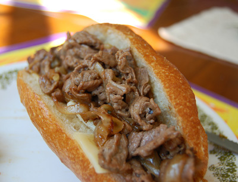

Garlic Philly Cheesesteak

Photo credit by jspatchwork via Wikimedia Commons.
Get grilling with our signature Garlic Philly Cheesesteak
Ingredients:
- 1 cup of mayonnaise
- 2 cloves of minced garlic
- 1 tablespoon of olive oil
- 1 pound of beef steak, cut into thin strips
- 2 green bell pepers, cut thinly
- 2 onions sliced into rings
- 4 hoagie rolls, split and toasted
- 8 ounces of shredded mozzarella cheese
- 1 teaspoon of dried oregano
- salt and pepper to taste
Steps:
- Combine mayo and minced garlic in a bowl, cover and refrigerate. Pre-heat oven to 500 degrees F
- Heat oil in pan and saute beef strips over medium heat
- Stir in peppers and onions, season with saltand pepper. Saute until tender
- Spread hoagie rolls with mayo mix
- Plate beef mixture evely onto rolls, top with cheese, and sprinkle oregano
- Place dressed rolls on baking pan
- Bake for 8 minutes or until lightly browned